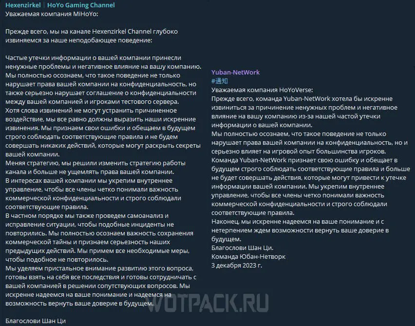

BY DAIRNIN 05.12.2023
Борьба HoYoverse с утечками запланированного контента Genshin Impact вышла на новый уровень — теперь разработчики мониторят популярные инсайдерские каналы в Telegram. «Письма счастья» с требованием удалить опубликованную информацию или закрыть канал уже получили такие известные сливеры как vississ, Yuban и hxg_diluc.
Некоторые инсайдеры, ранее уже имевшие дело с обвинениями в распространении материалов, принадлежащих HoYoverse, решили переместиться из открытых китайских и англоязычных площадок в более приватный Telegram в надежде продолжить деятельность. Однако, «кара» разработчиков все равно их настигла. На официальных каналах Yuban-NetWork и Hexenzirkel инсайдеры опубликовали сообщения с публичными извинениями перед компанией, где не только признали свою вину, но и пообещали впредь больше не заниматься распространением утечек.
BY DARIA 01.12.2023
В то время, как еще идет голосование во втором раунде TGA 2023, куда прошли Genshin Impact и Honkai: Star Rail, пришла новость об итогах номинации Partner awards 2023 Grand Award от PlayStation. В этой категории соревнуются азиатские игры с наибольшими продажами за период с октября 2022 по сентябрь 2023 год, и Genshin Impact на этот раз одержал победу.
Согласно традиции, идущей с первого года игры, разработчики решили разделить радость вместе с игроками. В качестве выражения благодарности за поддержку, комьюнити получит традиционные камни истока.
Суммарно игроков ожидают 800 примогемов, разделенных на 4 письма по 200 камней в каждом. Награды придут на игровую почту 2, 3, 4 и 5 декабря при обновлении дня сервера. В отличие от писем на дни рождения персонажей, заходить в игру, чтобы получить приз, необязательно. Ценные послания придут любому игроку, чей ранг приключений равен или выше 7 уровня. Кроме того, письма хранятся максимум 30 дней, поэтому не забудьте забрать ресурсы из них до того, как они исчезнут.
GUTSZ 29.11.2023
Популярная бесплатная экшен-игра Genshin Impact продолжает развиваться уже более трех лет, регулярно получая новый контент и даже сюжет. Вместе с обновлениями разработчики из студии miHoYo стараются всячески обогатить представленный фэнтезийный мир, прорабатывая все его элементы, особенно в области ключевых для истории героев. Авторы игры представили свежий выпуск дневников разработчиков, где можно подробнее узнать об особенностях создания Гидро Архонта.
Как признались в miHoYo, концепция Гидро Архонта существовала в команде сценаристов еще на ранних стадиях производства самой игры. В ходе дальнейшей разработки Genshin Impact и последующих обновлений игрокам была представлена его финальная форма в виде Фурины.